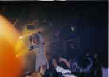
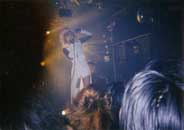
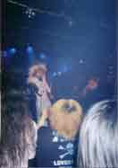
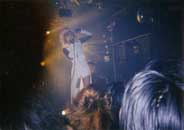
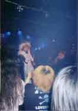

Laypua, ELY-SIA, THE PIASS, méffist

 




Note: Click on the image to see a larger version.
1. Shimobe (隷)
2. su.i.cide
MC
3. Kinu no Ito to Kumo no Ito (絹の絲と蜘の意図)
MC
4. Gyou (行)
5. Fusei Reiju (浮生麗終)
Fumiyuki (文有希) wore a pure white costume, and Syunji (瞬時) wore a black costume.
The set list was like the Reikai Jubaku (麗界呪縛) without "less".
I remember that the MC was long due to instrumental trouble or something. From that day on, I realized that Fumiyuki was a person who talked in circles during the MC.